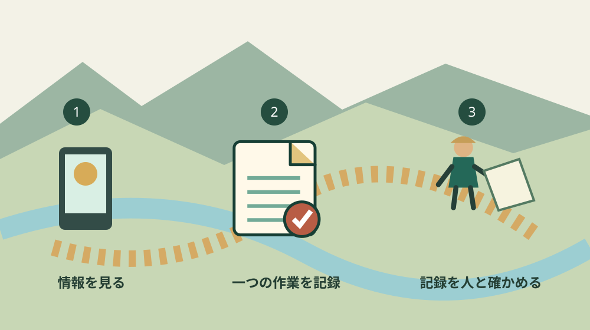

森町の農業データ活用｜92経営体の中身を読む
／ 農地・山林・茶畑
Q. 農業でデータを使うなら、高い機械を買う必要がある？
A. 森町の2025年農林業センサスでは、227経営体中92経営体がデータを活用しています。気象・市況を見る87経営体も含まれ、全てがセンサーを導入した数字ではありません。内訳は複数回答です。機器の購入を先に決めず、今ある気象情報と一つの作業記録を照らし、判断に使えるかを確かめるところから始められます。
毎日の工夫を、機械の有無だけで測らない
森町の農業を支える人は、天気、作業者の都合、出荷の予定を合わせて仕事を続けています。畑の様子を見て予定を変える判断も、その積み重ねです。データ活用という言葉を使うときに、これまでの工夫をなかったことにしたり、機器を持たない人を遅れていると扱ったりしたくありません。
大石浩之（磐田市／不動産業）です。この記事は、森町の農業経営体がどのようなデータを活用しているかを、公表された数字から読むものです。特定の機器やサービスの購入を勧める記事ではありません。今ある記録を、作業の引継ぎや見通しに使えるかを考えます。
確認日は2026年10月15日です。静岡県の「2025年農林業センサス調査結果（確定値）」を用います。県の報告書の公表日は2026年7月27日で、調査日は2025年2月1日です。2026年10月時点の利用状況を調べた数字とは区別して読んでください。
季節ごとの仕事を整理する背景として、森町の米・茶・林業などの作業時期を読む記事もあります。歴史資料にある作業暦を、現在の個別の農家の予定として使うものではありません。本記事では、記録を現在の経営でどう扱うかに焦点を絞ります。
確定値｜227経営体のうち92経営体が活用
静岡県の確定値の統計表、印刷81ページでは、森町の農業経営体は227です。データを活用した農業を行う経営体の小計は92、活用していない経営体は135と記載されています。PDFでは85ページ目に当たります。最初に総数と小計の関係を確認すると、内訳を読む土台がそろいます。
92を227で割ると、約40.5％です。この割合は、調査で捉えた森町の農業経営体を分母にした計算です。森町の全世帯や、家庭菜園を含む全ての農家の割合ではありません。分母を変えたまま「町の農家の約4割」とだけ書くと、対象が伝わらなくなります。
活用の内容を見ると、気象・市況等のデータを見て農業を行う経営体は87です。農作業履歴等をパソコン等で記録する経営体は36となっています。情報を見ることと、作業を記録することが、別の項目として数えられています。データ活用を一つの機械の有無で答える表ではありません。
機器・センサーで生育状況等のデータを計測・取得し分析する経営体は5です。データ分析を用いた営農上のサービスやサポートの利用は9となっています。この二つも別項目です。センサーを持つ経営体だけが、データを活用する経営体として集計されているわけではありません。
内訳は複数回答です。87、36、5、9を足すと137になりますが、小計92との食い違いではありません。同じ経営体が複数の方法を使うことがあるためです。どの方法を併用したかは、この森町行だけでは分かりません。87の全てが36を含む、といった重なりも推測しないでください。
数字が示すこと｜閲覧と記録と分析は別の作業
森町の確定値は、データ活用の中に気象や市況を見る行為も含まれることを示しています。私が意外だと感じるのは、92という小計から想像しがちな高度な設備と、表が数えている内容には幅があることです。高い機器を買わなければ入口に立てない、と読む必要はありません。
私は、閲覧、記録、分析を分けて考えると、始める仕事が具体的になると思います。気象情報を読む人と、作業の履歴を残す人は同じでも別でも構いません。ただ、誰も記録を見返さないまま入力だけ増やすなら、その作業は負担として残ります。道具より、何を判断したいかが先です。
例えば、作業時間を整理したいなら、日時、作業名、場所、人数を一つの仕事について残す方法があります。これは私の提案する記録例です。センサスがこの書式を要求しているわけではありません。最初から収穫量や天気など全項目を集めるより、次の作業の段取りに必要な欄を選びます。
記録した時間には、実作業だけか移動や準備を含むかを添えます。同じ「草刈り2時間」でも、どこまで含むかが違えば翌月の予定と比較できません。私は、細かな精度より、前提を同じにして読めることを優先したいと考えます。後から作業者が説明し直す手間を減らすためです。
ただし、この表から作業記録の効果を算出することはできません。利益が増えた額、作業時間が減った量、導入したサービスの名前は森町行に載っていません。活用があるという事実と、その結果が良かったという評価を分けます。データがあるだけで、採算が分かるわけではありません。
良い点｜入口の違いが分かり、導入を急がずに済む
農林業センサスの内訳が公開されている良い点は、データ活用を一つの姿に決めつけずに済むことです。私は、閲覧から計測や分析までを分けて見る資料として評価します。生産者が何を始めるかを考える際にも、設備をそろえる前の選択肢を見つけられます。
情報を見るところから始められるなら、今使っている道具が役立つかを先に試せます。例えば、作業予定を変えた日だけ、見た情報と実際に行った作業をメモします。これは私の活用案であり、収穫や安全を保証する方法ではありません。天気の判断や農業技術は、必要に応じて専門の情報を確かめます。
仕事を人へ頼む場面にも、作業記録は説明の助けになると思います。どこで何をするか、何人で何時間かかったかがあれば、依頼する内容を言葉にできます。森町の農家が求人を出す手順では、紹介の前に作業条件を整理する流れを扱っています。
森町の無料職業紹介所の案内は、求人票を提出し、紹介や面談を経て採用へ進む仕組みを説明しています。これはデータ入力を代行する制度ではありません。私は、記録で仕事の内容が伝われば、面談で必要な技能や時間を確認しやすくなると考えます。窓口の利用方法は現在の受付先へ確認してください。
将来、他の人へ作業を引き継ぐときにも、場所と日付が結び付く記録は残ります。使った道具の型番だけでなく、どの仕事のどの判断に役立ったかを書きます。私は、機器を持つことより、次の担当者が仕事を再開できる材料が増えることに価値を置きたいと考えます。
注文したい点｜AI利用や収益効果までは読み取れない
森町のデータ活用の統計表だけでは、AIを利用している経営体の数は確認できません。私は、データの活用をそのままAIの普及として紹介する説明には注文があります。数字が表す行為を広げすぎれば、これから試す生産者が、実際より高い出発点を求められたと感じるためです。
私も日々の仕事でAIを使っています。情報を整える道具には可能性を感じます。ただ、入力した作業記録を丸ごと任せたら、畑での判断まで済むとは考えません。記録が違っていたときに直せる人、結果を現場の条件と照らせる人を残すことが必要です。
無料で始められる道具でも、入力、確認、引継ぎの時間はかかります。私は、機器代だけで導入費を考えないほうがよいと思います。誰が記録し、通信できないときにどう残し、端末が替わったら誰が読めるかまで含めて、続くかを確かめたいところです。
私自身、どこまで記録すれば役立つかの線引きには迷います。細かく残せば比較の材料は増えますが、忙しい日に入力が止まる仕組みでは続きません。最初は一つの作業を決め、次にその記録を使う場面があるかを確かめる考えです。集めることを成果にしないようにします。
端末やサービスを選ぶ場合は、記録を取り出せるか、利用をやめた後に残せるかも質問します。これは特定の製品の機能を保証する案内ではありません。農地の場所や人の情報を扱うなら、共有する相手と範囲を決めます。手軽に共有できることと、誰へでも見せてよいことは別です。

対案・結論｜一つの作業を、次の判断に使える記録へ
森町でデータ活用を始めたい方が今日できる一歩は、手元の作業記録を一件だけ見つけることです。私は、紙のメモや日付の分かる写真でも、場所と作業を特定できるなら確認の入口になると考えます。ただし紙のメモだけで、センサスのパソコン等で記録する項目に該当するとは判定しません。
次に、その記録で何を決めたいかを一行書きます。次回の作業人数、出発する時刻、用意する道具など、一つで構いません。判断に使う目的がなければ、記録の項目を増やす前に立ち止まります。私は、現場の仕事が一つ進む形で試すことを勧めます。
記録の場所の書き方もそろえます。家族だけが知る呼び名を使うなら、地図や地番と対応させます。同じ茶園を別の呼び名で登録すると、作業の履歴が二つに分かれるためです。これは土地の境界を確定する作業ではなく、仕事の場所を取り違えないための整理です。
見返す担当と時期も一つ決めます。作業の前に前年の記録を読むのか、終わった後に予定との差を記すのかを選びます。私は、入力した人が休んだときにも、別の人が読める方法を優先します。専用の道具を買う話は、今の方法で何が不足するかを確かめてからでも遅くありません。
機器やサービスが必要になったら、解決したい不足を持って相談します。「データ活用をしたい」だけより、「同じ場所の作業履歴を家族で確認したい」と伝えるほうが条件を比べやすくなります。価格だけでなく、操作する人、記録の保管、困ったときの確認先まで並べて検討します。
家族に残す記録｜土地の利用とデータの保管をつなぐ
農業の記録を引き継ぐには、作業内容だけでなく、誰が農地を利用しているかも確認します。森町の地域計画の案内では、一筆ごとの将来の耕作者を示す目標地図を説明しています。町の将来の農地利用の資料と、手元の作業履歴は目的が異なります。片方をもう片方の代わりにしないでください。
私は、所有者、利用者、作業を頼んだ相手を別の欄で管理する形を勧めます。記録する端末の持ち主と、土地の所有者が同じとは限りません。端末が一人の手元にしかないなら、引継ぎ時にどの資料を渡すかを決めます。パスワードをむやみに書き配ることとは分けて考えます。
データの写しを残した日、保存場所、読むために必要な方法を一緒に記します。更新されていない写しと最新の記録を混ぜないことも必要です。私は、保存したファイルがあるだけで安心せず、別の担当者が実際に開いて場所と作業を読めるかを確認する方法を提案します。
茶園を続けるか自体が未定なら、茶園の継続条件を整理する記事へ戻れます。記録を残すことと、経営を続ける結論は別です。売る、貸す、任せるなどの判断が決まっていなくても、今ある仕事の内容を伝えられる状態は次の相談に役立ちます。
大石の視点｜道具に任せても、確かめる人を残す
私はこう考えます。農業のデータ活用は、機器を買った日に完成する仕事ではありません。次の作業で記録を読み、必要なら間違いを直し、判断に使えたかを確かめるところまでが仕事です。デジタル化には前向きですが、現場の判断を任せきりにする形には賛成できません。
この見方は、私が森町の農家で導入支援をした実話ではありません。仕事でAIを使う一人の事業者としての意見です。統計に書いていない効果を、自分の経験のように補って説明することはしません。92経営体という数字が教える範囲と、私の提案する試し方を分けておきます。
森町の生産者が続けている工夫には、記録すると伝えやすくなる部分があると思います。ただし、記録の負担を新たに一人へ集中させたら続きません。今日の一歩は、使っている機器の値段を比べることではなく、一つの作業記録を別の人と読み、次の作業で何が決められるかを一つ確かめることです。
よくある質問
92経営体はセンサーを導入した数ですか？
92はデータを活用した農業を行う経営体の小計です。気象・市況等を見る87や、パソコン等で作業履歴を記録する36などを含みます。機器・センサーで計測・取得し分析する項目は5です。各項目は複数回答なので足して92に合わせる集計ではありません。全てが機器を買った経営体という説明はできません。
2026年10月現在の数字ですか？
2025年農林業センサスは2025年2月1日を調査日とする統計です。この記事で参照した静岡県の確定値報告書は2026年7月27日公表です。公表日と調査日を区別し、2026年10月現在の利用数とは扱いません。227という分母も一定の条件で調査対象となる農業経営体であり、町の全世帯や全ての農家の数ではありません。
AIを使えば作業の判断も任せられますか？
この統計からAI利用者数や導入効果は分かりません。情報の整理に道具を使う場合も、元の記録と現場の条件を確かめる人が必要です。私は、最初に一つの作業を記録し、次の段取りに使えたかを人が見返す方法を提案します。栽培や安全などの専門判断をAIの回答だけで確定せず、必要な相談先へ確認してください。
出典・確認日
- 統計センターしずおか：2025年農林業センサス調査結果（確定値）（2026年10月確認／確認日：2026-10-15）
- 静岡県：2025年農林業センサス確定値・印刷81ページ（PDF85ページ目）（2026年10月確認／確認日：2026-10-15）
- 森町：農業経営基盤強化促進法に基づく地域計画について（2026年10月確認／確認日：2026-10-15）
- 森町：JA遠州中央ときめきアグリワーク無料職業紹介所の案内（2026年10月確認／確認日：2026-10-15）
最終確認日：2026-10-15。制度・数値・窓口案内は変わる場合があります。最新情報は発信主体へ確認してください。権利・登記・相続・農業技術や安全管理など、個別の判断は担当窓口や適切な専門家へご相談ください。